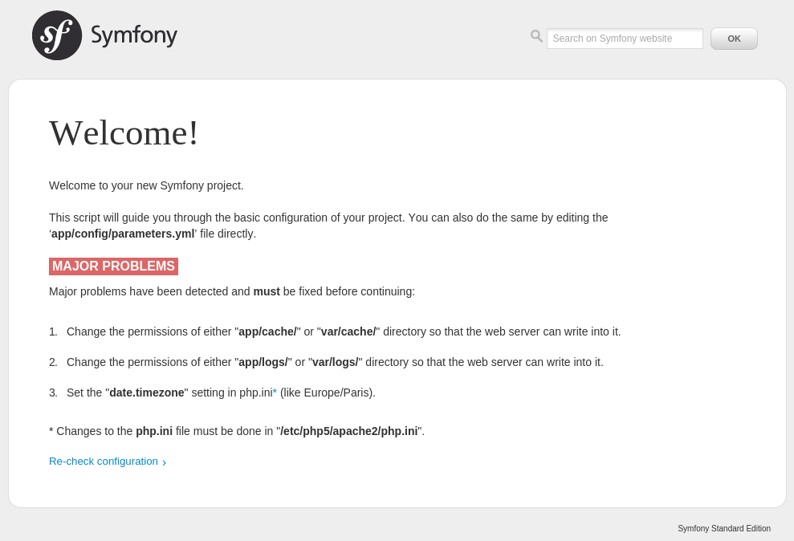
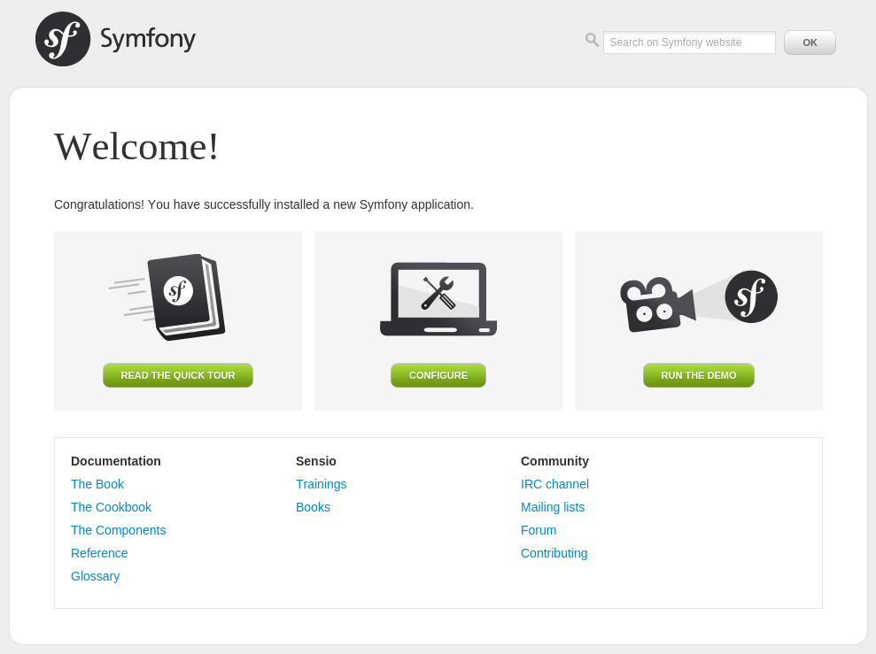

Pré-requis et installation du framework¶
Pré-requis¶
- PHP doit être au minimum à la version PHP 5.3.3
- JSON doit être activé
- ctype doit être activé
- Votre PHP.ini doit avoir le paramètre date.timezone défini
Installation de PHP¶
$ sudo apt-get install apache2 php5 php5-cli
Installation de MySQL¶
$ sudo apt-get install mysql-server php5-mysql
Installation d’Apache¶
$ sudo apt-get install apache2
Installation de librairies et outils supplémentaires¶
$ sudo apt-get install curl git tree
Installation de Symfony¶
Téléchargement de Symfony¶
Deux méthodes existent :
- Via le site Symfony http://symfony.com/download
- Via Composer
Nous allons préféré la seconde.
Dans un premier temps, installons Composer :
$ curl -sS https://getcomposer.org/installer | php
$ sudo mv composer.phar /usr/local/bin/composer
$ composer -h
$ composer create-project symfony/framework-standard-edition /var/www/html/Symfony [version]
Composer va télécharger et installer toutes les librairies nécessaires au fonctionnent de Symfony dans le répertoire /var/www/html/Symfony. il est possible de spécifier une version. S’il n’y en a pas, c’est la dernière version stable qui sera installée.
À la fin l’installation de Symfony, il vous propose une série de question pour le paramétrage :
Would you like to install Acme demo bundle? [y/N] y
database_driver (pdo_mysql):
database_host (127.0.0.1):
database_port (null):
database_name (symfony):
database_user (root): symfony
database_password (null): symfony
mailer_transport (smtp):
mailer_host (127.0.0.1):
mailer_user (null):
mailer_password (null):
locale (en): fr
secret (ThisTokenIsNotSoSecretChangeIt):
Tous ces paramètres sont enregistrés dans le fichier app/config/parameters.yml.
Vérifier votre configuration de PHP¶
Allez à l’adresse http://localhost/Symfony/web/config.php :
Corrigez tous les problèmes avant de continuer :
Change the permissions of either “app/cache/” or “var/cache/” directory so that the web server can write into it.
$ chmod -R 777 app/cache/Change the permissions of either “app/logs/” or “var/logs/” directory so that the web server can write into it.
$ chmod -R 777 app/logs/Set the “date.timezone” setting in php.ini* (like Europe/Paris).
# /etc/php5/apache2/php.ini date.timezone = Europe/Paris # /etc/php5/cli/php.ini date.timezone = Europe/Paris
L’installation de Symfony est terminée. Rendez-vous sur la page http://localhost/Symfony/web/app_dev.php/, vous devriez voir une page ressemblant à l’image ci-dessous :
Vérifier la configuration de PHP en console¶
Pour gagner du temps, vous aurez besoin d’exécuter des commandes PHP via la console, vérifions donc que la configuration de PHP soit correcte :
$ php app/check.php